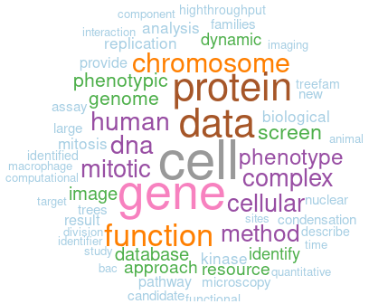

I am a staff scientist at the European Molecular Biology Laboratory (EMBL) working in the Cell Biology and Biophysics Unit.
I develop and apply data integration and analysis methods to extract biological knowledge from large scale image data sets and multi-omics data. I am also interested in the development of a cloud-based ecosystem for image data analysis.
Before working for the Cell Biology and Biophysics Unit, I worked in:
- Jan Ellenberg's group at the EMBL
- Richard Durbin's group at the Wellcome Trust Sanger Institute
- Pat O'Farrell's group at the University of California, San Francisco (UCSF).
My current interests revolve around:
- Integration and mining of dynamic biological data
- Image-based systems biology
- Bioimage informatics
- Systems biology of mitosis
Word cloud representation of PubMed abstracts of my publications (updated 02/2021):

Also on Google scholar
- Theiss M, Hériché JK, Russell C, Helekal D, Soppitt A, Ries J, Ellenberg J, Brazma A, Uhlmann V. Simulating structurally variable Nuclear Pore Complexes for Microscopy. Bioinformatics, 2023, btad587
- David R, Rybina A, Burel JM, Hériché JK, Audergon P, Boiten JW, Coppens F, Crockett S, Exter K, Fahrner S, Fratelli M, Goble C, Gormanns P, Grantner T, Gruening B, Gurwitz KT, Hancock J, Harmse H, Holub P, Juty N, Karnbach G, Karoune E, Keppler A, Klemeier J, Lancelotti C, Legras JL, Lister LA, Longo DL, Ludwig R, Madon B, Massimi M, Matser V, Matteoni R, Mayrhofer MT, Ohmann C, Panagiotopoulou M, Parkinson H,; Perseil I, Pfander C, Pieruschka R, Raess M, Rauber A, Richard AS, Romano P, Rosato A, Sanchez-Pla A, Sansone SA, Sarkans U, Serrano-Solano B, Tang J, Tanoli Z, Tedds J, Wagener H, Weise M, Westerhoff HV, Wittner R, Ewbank J, Blomberg N, Gribbon P. "Be Sustainable", Recommendations for FAIR Resources in Life Sciences research: EOSC-Life's Lessons. In press EMBO J.
- Martinez A, Hériché JK, Calvo M, Tischer C, Otxoa-de-Amezaga A, Pedragosa J, Bosch A, Planas AM, Petegnief V. Characterization of microglia behaviour in healthy and pathological conditions with image analysis tools. Open Biol. 2023. Open Biol.13:220200.
- Muller C, Serrano-Solano B, Sun Y, Tischer C, Hériché JK. The Image Data Explorer: interactive exploration of image-derived data. PLOS ONE 17(9): e0273698.
- Sabinina VJ, Hossain MJ, Hériché JK, Hoess P, Nijmeijer B, Mosalaganti S, Kueblbeck M, Callegari A, Szymborska A, Beck M, Ries J, Ellenberg J. Three-dimensional superresolution fluorescence microscopy maps the variable molecular architecture of the nuclear pore complex. Mol Biol Cell. 2021 Aug 15;32(17):1523-1533. PMID: 34191541.
- Sarkans U, Chiu W, Collinson L, Darrow MC, Ellenberg J, Grunwald D, Hériché JK, Iudin A, Martins GG, Meehan T, Narayan K, Patwardhan A, Russell MRG, Saibil HR, Strambio-De-Castillia C, Swedlow JR, Tischer C, Uhlmann V, Verkade P, Barlow M, Bayraktar O, Birney E, Catavitello C, Cawthorne C, Wagner-Conrad S, Duke E, Paul-Gilloteaux P, Gustin E, Harkiolaki M, Kankaanpää P, Lemberger T, McEntyre J, Moore J, Nicholls AW, Onami S, Parkinson H, Parsons M, Romanchikova M, Sofroniew N, Swoger J, Utz N, Voortman LM, Wong F, Zhang P, Kleywegt GJ, Brazma A. REMBI: Recommended Metadata for Biological Images-enabling reuse of microscopy data in biology. Nat Methods. 2021 May 21;18(12):1418-1422. PMID: 34021280.
- Paul-Gilloteaux P, Tosi S, Hériché JK, Gaignard A, Ménager H, Marée R, Baecker V, Klemm A, Kalaš M, Zhang C, Miura K, Colombelli J. Bioimage analysis workflows: community resources to navigate through a complex ecosystem. F1000Research 2021, 10:320
- Alladin A, Chaible L, Garcia del Valle L, Reither S, Loeschinger M, Wachsmuth M, Hériché JK, Tischer C, Jechlinger M. Tracking cells in epithelial acini by light sheet microscopy reveals proximity effects in breast cancer initiation. eLife. 2020; 9: e54066.
- Hériché JK, Alexander S, Ellenberg J. Integrating imaging and omics: Computational methods and challenges. Annu. Rev. Biomed. Data Sci. 2019. 2:1, 175-197
- Cai Y, Hossain MJ, Hériché JK, Politi AZ, Walther N, Koch B, Wachsmuth M, Nijmeijer B, Kueblbeck M, Martinic M, Ladurner R, Peters JMP, Ellenberg J. An experimental and computational framework to build a dynamic protein atlas of human cell division. Nature. 2018 Sep;561(7723):411-415. doi: 10.1038/s41586-018-0518-z. PubMed PMID: 30202089. bioRxiv.
- Ivanov MP, Ladurner R, Poser I, Beveridge R, Rampler E, Hudecz O, Novatchkova M, Hériché JK, Wutz G, van der Lelij P, Kreidl E, Hutchins JR, Axelsson-Ekker H, Ellenberg J, Hyman AA, Mechtler K, Peters JM. The replicative helicase MCM recruits cohesin acetyltransferase ESCO2 to mediate centromeric sister chromatid cohesion. EMBO J. 2018 Jun 21. pii: e97150. doi: 10.15252/embj.201797150. PubMed PMID: 29930102
- Xiang W, Roberti MJ, Hériché JK, Huet S, Alexander S, Ellenberg J. Correlative live and super-resolution imaging reveals the dynamic structure of replication domains. J Cell Biol. 2018 Mar 23. doi: 10.1083/jcb.201709074. PubMed PMID: 29572382. bioRxiv.
- Otsuka S, Steyer AM, Schorb M, Hériché JK, Hossain MJ, Sethi S, Kueblbeck M, Schwab Y, Beck M, Ellenberg J. Postmitotic nuclear pore assembly proceeds by radial dilation of small ER membrane openings. Nat Struct Mol Biol. 2018 Jan;25(1):21-28. PubMed PMID: 29323269. bioRxiv.
- McMurry JA, Juty N, Blomberg N, Burdett T, Conlin T, Conte N, Courtot M, Deck J, Dumontier M, Fellows DK, Gonzalez-Beltran A, Gormanns P, Grethe J, Hastings J, Hériché JK, Hermjakob H, Ison JC, Jimenez RC, Jupp S, Kunze J, Laibe C, Le Novère N, Malone J, Martin MJ, McEntyre JR, Morris C, Muilu J, Müller W, Rocca-Serra P, Sansone SA, Sariyar M, Snoep JL, Soiland-Reyes S, Stanford NJ, Swainston N, Washington N, Williams AR, Wimalaratne SM, Winfree LM, Wolstencroft K, Goble C, Mungall CJ, Haendel MA, Parkinson H. Identifiers for the 21st century: How to design, provision, and reuse persistent identifiers to maximize utility and impact of life science data. PLoS Biol. 2017 Jun 29;15(6):e2001414. PubMed PMID: 28662064
- Serrano-Solano B, Díaz Ramos A, Hériché JK, Ranea JA. How can functional annotations be derived from profiles of phenotypic annotations ? BMC Bioinformatics. 2017 Feb 10;18(1):96. doi: 10.1186/s12859-017-1503-5. PubMed PMID: 28183267; Europe PMC PMCID: PMC5304448
- Pedersen RS, Karemore G, Gudjonsson T, Rask MB, Neumann B, Hériché JK, Pepperkok R, Ellenberg J, Gerlich DW, Lukas J, Lukas. Profiling DNA damage response following mitotic perturbations. Nat Commun. 2016 Dec 15;7:13887. doi: 10.1038/ncomms13887. PubMed PMID: 27976684; Europe PMC PMCID: PMC5172227
- Jupp S, Malone J, Burdett T, Hériché JK, Williams E, Ellenberg J, Parkinson H, Rustici G. The cellular microscopy phenotype ontology. J Biomed Semantics. 2016 May 18;7:28. doi: 10.1186/s13326-016-0074-0. eCollection 2016. PubMed PMID: 27195102; Europe PMC PMCID: PMC4870745
- Isokane M, Walter T, Mahen R, Nijmeijer B, Hériché JK, Miura K, Maffini S, Ivanov M, Kitajima T, Peters JM, Ellenberg J. ARHGEF17 is an essential spindle assembly checkpoint factor that targets Mps1 to kinetochores. J Cell Biol. 2016 Mar 7;212(6):647-659. doi: 10.1083/jcb.201408089. PubMed PMID: 26953350; Europe PMC PMCID: PMC4792069
- Lees JG, Hériché JK, Morilla I, Fernández JM, Adler P, Krallinger M, Vilo J, Valencia A, Ellenberg J, Ranea JA, Orengo C. FUN-L: Gene prioritization for RNAi screens. Bioinformatics. 2015 Feb 8. pii: btv073. PubMed PMID: 25667547
- Aleksic J, Alexa A, Attwood TK, Chue Hong N, Dahlö M, Davey R, Dinkel H, Förstner KU, Grigorov I, Hériché JK, Lahti L, MacLean D, Markie ML, Molloy J, Schneider MV, Scott C, Smith-Unna R, Vieira BM; as part of the AllBio: Open Science & Reproducibility Best Practice Workshop. An open science peer review oath. Version 2. F1000Res. 2014 Nov 12 [revised 2015 Jan 9];3:271. doi: 10.12688/f1000research.5686.2. eCollection 2014. PubMed PMID: 25653839; Europe PMC PMCID: PMC4304228.
- Patwardhan A, Ashton A, Brandt R, Butcher S, Carzaniga R, Chiu W, Collinson L, Doux P, Duke E, Ellisman MH, Franken E, Grünewald K, Hériché JK, Koster A, Kühlbrandt W, Lagerstedt I, Larabell C, Lawson CL, Saibil HR, Sanz-García E, Subramaniam S, Verkade P, Swedlow JR, Kleywegt GJ. A 3D cellular context for the macromolecular world. Nat Struct Mol Biol. 2014 Oct 7;21(10):841-845. doi: 10.1038/nsmb.2897. PubMedID: 25289590
- Hériché JK, Lees JG, Morilla I, Walter T, Petrova B, Roberti MJ, Hossain MJ, Adler P, Fernández JM, Krallinger M, Häring CH, Vilo J, Valencia A, Ranea JA, Orengo C, Ellenberg J. Integration of biological data by kernels on graph nodes allows prediction of new genes involved in mitotic chromosome condensation. Mol Biol Cell. 2014 Aug 15;25(16):2522-2536. doi: 10.1091/mbc.E13-04-0221. PubMed PMID: 24943848; Europe PMC PMCID: PMC4142622
- Hériché JK. Systematic cell phenotyping. In: JM Hancock (editor). Phenomics. Boca Raton (FL) CRC Press; 2014. Chapter 5.
- Pau G, Walter T, Neumann B, Hériché JK, Ellenberg J, Huber W. Dynamical modelling of phenotypes in a genome-wide RNAi live-cell imaging assay. BMC Bioinformatics. 2013 Oct 16;14:308. doi: 10.1186/1471-2105-14-308. PubMed PMID:24131777; Europe PMC PMCID: PMC3827932.
- Almaça J, Faria D, Sousa M, Uliyakina I, Conrad C, Sirianant L, Clarke LA, Martins JP, Santos M, Hériché JK, Huber W, Schreiber R, Pepperkok R, Kunzelmann K, Amaral MD. High-content siRNA screen reveals global ENaC regulators and potential cystic fibrosis therapy targets. Cell. 2013 Sep 12;154(6):1390-400. doi: 10.1016/j.cell.2013.08.045. PubMed PMID: 24034256.
- Petrova B, Dehler S, Kruitwagen T, Hériché JK, Miura K, Häring CH. Quantitative analysis of chromosome condensation in fission yeast. Mol Cell Biol. 2013 Mar;33(5):984-98. doi: 10.1128/MCB.01400-12. Epub 2012 Dec 21. PubMed PMID: 23263988; Europe PMC PMCID: PMC3623070.
- Gudjonsson T, Altmeyer M, Savic V, Toledo L, Dinant C, Grøfte M, Bartkova J, Poulsen M, Oka Y, Bekker-Jensen S, Mailand N, Neumann B, Hériché JK, Shearer R, Saunders D, Bartek J, Lukas J, Lukas C. TRIP12 and UBR5 suppress spreading of chromatin ubiquitylation at damaged chromosomes. Cell. 2012 Aug 17;150(4):697-709. doi: 10.1016/j.cell.2012.06.039. Epub 2012 Aug 9. PubMed PMID: 22884692.
- Simpson JC, Joggerst B, Laketa V, Verissimo F, Cetin C, Erfle H, Bexiga MG, Singan VR, Hériché JK, Neumann B, Mateos A, Blake J, Bechtel S, Benes V, Wiemann S, Ellenberg J, Pepperkok R. Genome-wide RNAi screening identifies human proteins with a regulatory function in the early secretory pathway. Nat Cell Biol. 2012 Jun 3;14(7):764-74. doi: 10.1038/ncb2510. PubMed PMID: 22660414.
- Ley S, Weigert A, Hériché JK, Mille-Baker B, Janssen RA, Brüne B. RNAi screen in apoptotic cancer cell-stimulated human macrophages reveals co-regulation of IL-6/IL-10 expression. Immunobiology. 2013 Jan;218(1):40-51. doi: 10.1016/j.imbio.2012.01.019. Epub 2012 Feb 2. PubMed PMID: 22445721.
- Bird AW, Erler A, Fu J, Hériché JK, Maresca M, Zhang Y, Hyman AA, Stewart AF. High-efficiency counterselection recombineering for site-directed mutagenesis in bacterial artificial chromosomes. Nat Methods. 2011 Dec 4;9(1):103-9. doi: 10.1038/nmeth.1803. PubMed PMID: 22138824.
- Moudry P, Lukas C, Macurek L, Neumann B, Hériché JK, Pepperkok R, Ellenberg J, Hodny Z, Lukas J, Bartek J. Nucleoporin NUP153 guards genome integrity by promoting nuclear import of 53BP1. Cell Death Differ. 2012 May;19(5):798-807. doi: 10.1038/cdd.2011.150. Epub 2011 Nov 11. PubMed PMID: 22075984; Europe PMC PMCID: PMC3321618.
- Hegemann B, Hutchins JR, Hudecz O, Novatchkova M, Rameseder J, Sykora MM, Liu S, Mazanek M, Lénárt P, Hériché JK, Poser I, Kraut N, Hyman AA, Yaffe MB, Mechtler K, Peters JM. Systematic phosphorylation analysis of human mitotic protein complexes. Sci Signal. 2011 Nov 8;4(198):rs12. doi: 10.1126/scisignal.2001993. PubMed PMID: 22067460.
- Lees JG, Hériché JK, Morilla I, Ranea JA, Orengo CA. Systematic computational prediction of protein interaction networks. Phys Biol. 2011 Jun;8(3):035008. doi: 10.1088/1478-3975/8/3/035008. Epub 2011 May 13. PubMed PMID: 21572181.
- Smedley D, Schofield P, Chen CK, Aidinis V, Ainali C, Bard J, Balling R, Birney E, Blake A, Bongcam-Rudloff E, Brookes AJ, Cesareni G, Chandras C, Eppig J, Flicek P, Gkoutos G, Greenaway S, Gruenberger M, Hériché JK, Lyall A, Mallon AM, Muddyman D, Reisinger F, Ringwald M, Rosenthal N, Schughart K, Swertz M, Thorisson GA, Zouberakis M, Hancock JM. Finding and sharing: new approaches to registries of databases and services for the biomedical sciences. Database (Oxford). 2010 Jul 6;2010:baq014. doi: 10.1093/database/baq014. PubMed PMID: 20627863; Europe PMC PMCID: PMC2911849.
- Neumann B, Walter T, Hériché JK, Bulkescher J, Erfle H, Conrad C, Rogers P, Poser I, Held M, Liebel U, Cetin C, Sieckmann F, Pau G, Kabbe R, Wünsche A, Satagopam V, Schmitz MH, Chapuis C, Gerlich DW, Schneider R, Eils R, Huber W, Peters JM, Hyman AA, Durbin R, Pepperkok R, Ellenberg J. Phenotypic profiling of the human genome by time-lapse microscopy reveals cell division genes. Nature. 2010 Apr 1;464(7289):721-7. doi: 10.1038/nature08869. PubMed PMID: 20360735; Europe PMC PMCID: PMC3108885.
- Hutchins JR, Toyoda Y, Hegemann B, Poser I, Hériché JK, Sykora MM, Augsburg M, Hudecz O, Buschhorn BA, Bulkescher J, Conrad C, Comartin D, Schleiffer A, Sarov M, Pozniakovsky A, Slabicki MM, Schloissnig S, Steinmacher I, Leuschner M, Ssykor A, Lawo S, Pelletier L, Stark H, Nasmyth K, Ellenberg J, Durbin R, Buchholz F, Mechtler K, Hyman AA, Peters JM. Systematic analysis of human protein complexes identifies chromosome segregation proteins. Science. 2010 Apr 30;328(5978):593-9. doi: 10.1126/science.1181348. Epub 2010 Apr 1. PubMed PMID: 20360068; Europe PMC PMCID: PMC2989461.
- Walter T, Shattuck DW, Baldock R, Bastin ME, Carpenter AE, Duce S, Ellenberg J, Fraser A, Hamilton N, Pieper S, Ragan MA, Schneider JE, Tomancak P, Hériché JK. Visualization of image data from cells to organisms. Nat Methods. 2010 Mar;7(3 Suppl):S26-41. doi: 10.1038/nmeth.1431. Review. PubMed PMID: 20195255; Europe PMC PMCID: PMC3650473.
- O'Donoghue SI, Gavin AC, Gehlenborg N, Goodsell DS, Hériché JK, Nielsen CB, North C, Olson AJ, Procter JB, Shattuck DW, Walter T, Wong B. Visualizing biological data-now and in the future. Nat Methods. 2010 Mar;7(3 Suppl):S2-4. doi: 10.1038/nmeth.f.301. PubMed PMID: 20195254.
- Walter T, Held M, Neumann B, Hériché JK, Conrad C, Pepperkok R, Ellenberg J. Automatic identification and clustering of chromosome phenotypes in a genome wide RNAi screen by time-lapse imaging. J Struct Biol. 2010 Apr;170(1):1-9. doi: 10.1016/j.jsb.2009.10.004. Epub 2009 Oct 23. PubMed PMID: 19854275.
- Poser I, Sarov M, Hutchins JR, Hériché JK, Toyoda Y, Pozniakovsky A, Weigl D, Nitzsche A, Hegemann B, Bird AW, Pelletier L, Kittler R, Hua S, Naumann R, Augsburg M, Sykora MM, Hofemeister H, Zhang Y, Nasmyth K, White KP, Dietzel S, Mechtler K, Durbin R, Stewart AF, Peters JM, Buchholz F, Hyman AA. BAC TransgeneOmics: a high-throughput method for exploration of protein function in mammals. Nat Methods. 2008 May;5(5):409-15. doi: 10.1038/nmeth.1199. Epub 2008 Apr 6. Erratum in: Nat Methods. 2008 Aug;5(8):748. PubMed PMID: 18391959; Europe PMC PMCID: PMC2871289.
- Ruan J, Li H, Chen Z, Coghlan A, Coin LJ, Guo Y, Hériché JK, Hu Y, Kristiansen K, Li R, Liu T, Moses A, Qin J, Vang S, Vilella AJ, Ureta-Vidal A, Bolund L, Wang J, Durbin R. TreeFam: 2008 Update. Nucleic Acids Res. 2008 Jan;36(Database issue):D735-40. Epub 2007 Dec 1. PubMed PMID: 18056084; Europe PMC PMCID: PMC2238856.
- Moses AM, Hériché JK, Durbin R. Clustering of phosphorylation site recognition motifs can be exploited to predict the targets of cyclin-dependent kinase. Genome Biol. 2007;8(2):R23. PubMed PMID: 17316440; Europe PMC PMCID: PMC1852407.
- Li H, Coghlan A, Ruan J, Coin LJ, Hériché JK, Osmotherly L, Li R, Liu T, Zhang Z, Bolund L, Wong GK, Zheng W, Dehal P, Wang J, Durbin R. TreeFam: a curated database of phylogenetic trees of animal gene families. Nucleic Acids Res. 2006 Jan 1;34(Database issue):D572-80. PubMed PMID: 16381935; Europe PMC PMCID: PMC1347480.
- Hériché JK, Ang D, Bier E, O'Farrell PH. Involvement of an SCFSlmb complex in timely elimination of E2F upon initiation of DNA replication in Drosophila. BMC Genet. 2003 Jun 4;4:9. PubMed PMID: 12787468; Europe PMC PMCID: PMC161817.
- Hériché JK, Chambaz EM. Protein kinase CK2alpha is a target for the Abl and Bcr-Abl tyrosine kinases. Oncogene. 1998 Jul 9;17(1):13-8. PubMed PMID: 9671309.
- Leroy D, Hériché JK, Filhol O, Chambaz EM, Cochet C. Binding of polyamines to an autonomous domain of the regulatory subunit of protein kinase CK2 induces a conformational change in the holoenzyme. A proposed role for the kinase stimulation. J Biol Chem. 1997 Aug 15;272(33):20820-7. PubMed PMID: 9252407.
- Hériché JK, Lebrin F, Rabilloud T, Leroy D, Chambaz EM, Goldberg Y. Regulation of protein phosphatase 2A by direct interaction with casein kinase 2alpha. Science. 1997 May 9;276(5314):952-5. PubMed PMID: 9139659.
Here are a few projects I've been working on (mostly in R, hosted on EMBL's GitLab instance):
- The Image Data Explorer: A R/shiny app to plot and explore image-derived data while visualizing the image(s) and regions of interest associated with each data point (see screenshot).
- LOMAR: An R package to deal with single molecule localization microscopy data. It implements several point sets registration methods and includes functions to compute similarity between point sets using persistent homology. Available on CRAN.
- Code to generate the mitotic cell atlas. This is the data processing code, the mitotic cell atlas can be visualized here.
{kind=link}
Some useful perl modules I have written (hosted on GitHub):
- Algorithms::Matrix: an object-oriented matrix manipulation and linear algebra library (requires Inline::C)
- Algorithms::Cube: an object-oriented library for third order tensors (requires Algorithms::Matrix)
- Algorithms::Graph: extends Graph::Undirected (requires Graph::Undirected and Algorithms::Matrix)
- Algorithms::FCM: fuzzy c-means clustering (requires Inline::C)
- Algorithms::RVM: relevance vector machine for classification (requires Algorithms::Matrix)
- Algorithms::HMM: hidden Markov model (requires Algorithms::Matrix)
- Algorithms::GMM: Gaussian mixture model (requires Algorithms::Matrix)
- Algorithms::TimeSeries: extends Algorithms::Matrix with methods for time series (requires Algorithms::Matrix)
- Algorithms::Kernel: extends Algorithms::Matrix with methods to compute and manipulate kernels (requires Algorithms::Matrix)
- HDF5: perl wrapper for the hdf5 library
- CellH5: perl API to the CellH5 file format (requires HDF5)
- Labstuff: perl objects to represent various lab items
Notes from an EMBL workshop on data integration and mining with graphs:
I am currently involved in the EOSC-Life project:

I have built and maintain the following projects web sites and databases:
I have been involved in the following projects:
I have also contributed to the creation of 
I was a member of the now defunct HUB (Heidelberg Unseminars in Bioinformatics).
Jean-Karim Hériché
Cell Biology & Biophysics Unit
European Molecular Biology Laboratory
Meyerhofstraße 1
69117 Heidelberg, Germany
Phone: +49-6221-387-8677
Email: heriche (*at*) embl.de